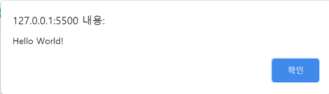
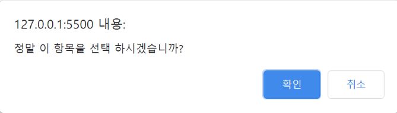
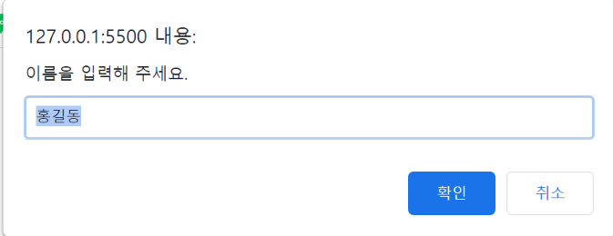
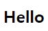
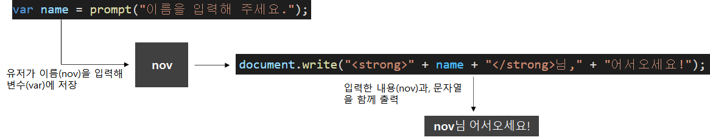
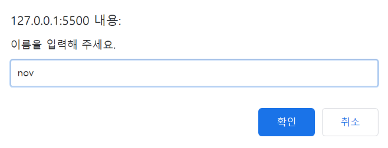
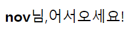
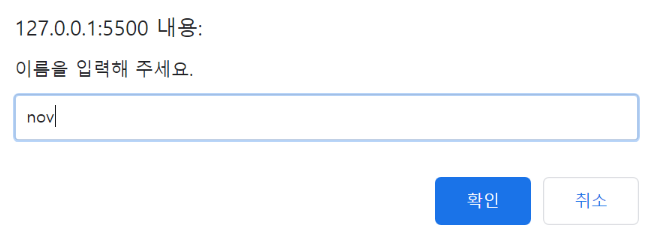
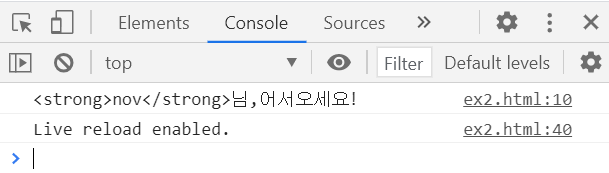

#1 간단한 입출력 정리
[목차]
1. alert() - 알림 창 출력하기
2. confrim() - 확인 창 출력하기
3. prompt() - 프롬프트 창 입력받기
4. document.write() - 화면에 출력하기
5. console.log() - 콘솔 창에 출력하기
*개인적인 공부기록 용으로 작성한 게시글이기에, 잘못된 내용이 있을 수 있습니다.
#1 alert()
alert()는 알림 창을 만들 때 사용합니다. alert()의 따옴표(" " or ' ') 안에 출력하고자 하는 내용을 입력하면 됩니다.
[기본형] alert("원하는 메시지 입력")다음은 alert()를 이용해 Hello World! 문자열을 출력하는 예제입니다.
<script>
alert("Hello World!");
</script>
#2 confirm()
confirm()은 확인 창을 출력할 때 사용합니다. 확인 창(confrim)은, 사용자가 [확인] 혹은 [취소] 버튼 중에 클릭이 가능하며, 선택한 버튼에 따라서 프로그램이 동작하도록 할 수 있습니다. alert()와 마찬가지로, 따옴표(" " or ' ')안에 출력할 메시지를 작성합니다.
[기본형] confirm("출력할 메시지");다음은 confirm()을 사용해 확인 창을 출력하는 에제입니다.
<script>
confirm("정말 이 항목을 선택 하시겠습니까?");
</script>
#3 prompt
prompt()는 프롬프트 창에서 입력을 받을 때 사용합니다.
프롬프트 창(prompt)이란, 텍스트 필드가 있는 작은 창으로 필드 안에 간단한 메시지를 입력 할 수 있습니다.
프롬프트 창을 제작할 시 「기본값」을 2번째 인자에 지정할 수 있습니다.
[기본형] prompt("이름을 입력해 주세요" , "홍길동");다음은 prompt()를 사용한 예제입니다.
<script>
prompt("이름을 입력해 주세요.", "홍길동");
</script>
"홍길동" 기본값을 넣어 주었기에, 프롬프트 창이 출력될 때 자동으로 "홍길동"텍스트가 작성되어 출력됩니다.
#4 document.write()
document.write()는 웹 화면에 출력을 할 때 사용합니다. #1 #2 #3과 달리 뒤에 (.)이 붙어 있는데, 이는 document 객체 안의 write명령문 이라는 것을 의미합니다. 객체는 추 후에 정리할 예정이니 그냥 넘어가셔도 됩니다.document.write()문의 따옴표(" " or ' ') 안에 화면에 표시할 내용을 넣어서 사용합니다. (HTML 태그와 같이 사용 가능합니다.)
다음은 document.write()와 HTML의 <strong></strong>태그를 함께 사용한 예제입니다.
<script>
document.write("<strong>Hello</strong>");
</script>
문자열과 변수 등을 연결할 때는 연결 연산자(+)를 사용합니다.
<script>
var name = prompt("이름을 입력해 주세요.");
document.write("<strong>" + name + "</strong>님," + "어서오세요!");
</script>  
#5 console.log()
console.log()는 괄호 안의 내용을 콘솔 창에 표시할 때 사용합니다.
콘솔 창이란, 웹 브라우저 개발 도구창에 포함된 공간으로, 디버깅을 할 때 주로 사용합니다.
[기본형] console.log("출력할 메시지:);다음은 console.log를 이용한 예제입니다.
<script>
var name = prompt("이름을 입력해 주세요.");
console.log("<strong>" + name + "</strong>님," + "어서오세요!");
</script>
내용을 입력해도 화면에는 아무런 내용도 출력되지 않습니다.
그 상태에서 Ctrl + Shift + J 를 누르면 콘솔 창이 나타납니다.
